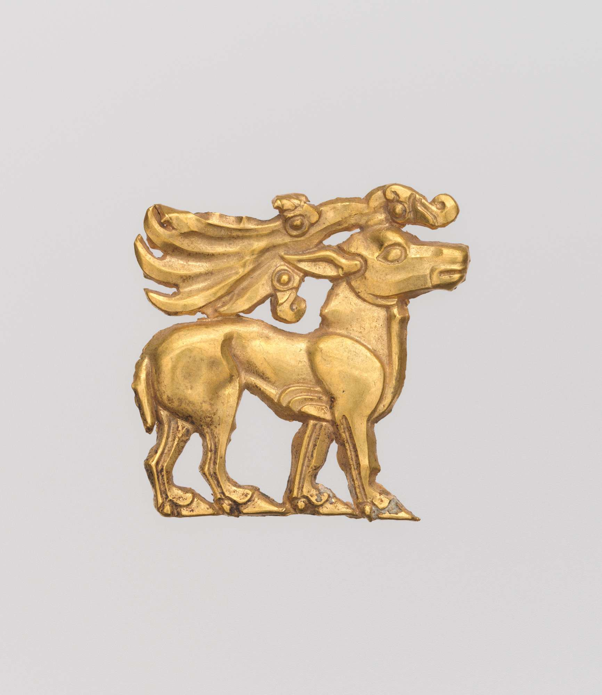

Schicht für Schicht zum Fund.
Ein durchgehendes Ausgrabungsspiel: Der Goldhirsch liegt optisch in einer simulierten Erdvertiefung. Du arbeitest erst mit dem Spatel und danach ohne Unterbrechung mit dem Pinsel – bis das unveränderte Museumsfoto erscheint.

Bildquelle: The Metropolitan Museum of Art, Goldhirsch, Inv. 24.97.55. Erdreich, Schatten, Staub und Fundlage sind frei gestaltete Simulationen, keine Rekonstruktion der tatsächlichen Ausgrabung.
Konzept & Entwicklung: Paul Fürst · Museumspädagogische Simulation · Keine Anleitung zur realen Fundbehandlung